A barbed-wire barricade on a Shanghai street, 1927. Bain News Service, Library of Congress. Public domain, Wikimedia Commons.
Q1 story · Shanghai · 12 April 1927
On 12 April 1927, Gangsters and Soldiers Attacked the Unions That Had Just Handed Shanghai to Chiang
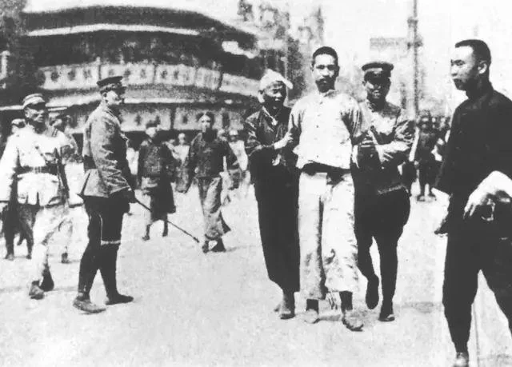
Soldiers and police lead away suspected Communists in Shanghai, April 1927. AI-enhanced from a public-domain original, Wikimedia Commons.
Before dawn, armed gangsters in workers' armbands attacked the union pickets.
Chiang Kaishek's soldiers then disarmed the unions "to keep order."
The next day troops fired on a protest march; the killing went on for weeks.
Hundreds died in the first days and thousands in the weeks after.
Sources: Ebrey, Ch. 25, p. 440; Elizabeth J. Perry, Shanghai on Strike (1993); Harold R. Isaacs, The Tragedy of the Chinese Revolution (1938, rev. 1961). Image: Shanghai, April 1927.
Q1 story · Recap · Guangzhou to Wuhan · 1924–1927
Recap: Since 1924 the Communists Had Worked Inside Sun Yatsen's Nationalist Party
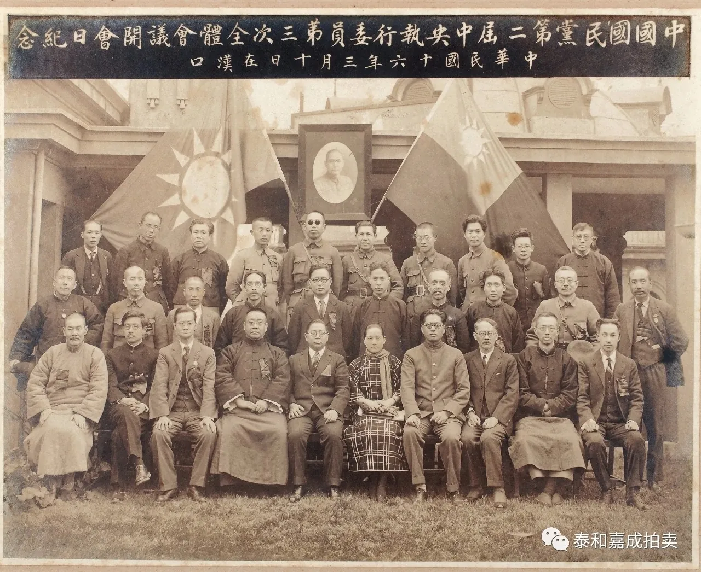
The Nationalist Party's Central Committee meets at Wuhan, 10 March 1927, without Chiang; Soong Qingling, Sun Yatsen's widow, sits in the front row. Public domain, Wikimedia Commons.
The Comintern backed Sun Yatsen's party with money, arms, and advisers · Ch. 24 L4 · Comintern ↗
Thousands of young Chinese, men and women, went to France to work and study.
In French factories they met strikes and Marxism firsthand.
Sources: Ebrey, Ch. 25, p. 440; Marilyn A. Levine, The Found Generation: Chinese Communists in Europe during the Twenties (1993). Image: Shanghai, 1920.
Q1 concept · Democratic centralism
Concept: Democratic Centralism Meant Debate Inside the Cell, Then Every Member Obeyed
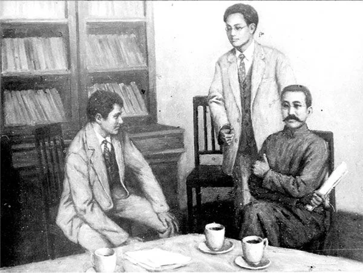
Li Dazhao (right) with the Comintern agent Grigori Voitinsky, Beijing, 1920. Public domain, Wikimedia Commons.
Concept
Democratic centralism
The Leninist rule of party discipline: local cells elect delegates to higher levels, up to the national congress and its committees. Members may debate a question, but once a decision is made every member must carry it out.
In 1920 Comintern agents came to turn the study groups into party cells.
Delegates flowed up; decisions flowed down.
Ebrey: this was discipline "beyond anything in the prior repertoire" of Chinese organizations.
Sources: Ebrey, Ch. 25, p. 440. Image: Beijing, 1920.
Q1 story · Shanghai · July 1921
In July 1921 Thirteen Delegates Founded a Secret, Disciplined Communist Party
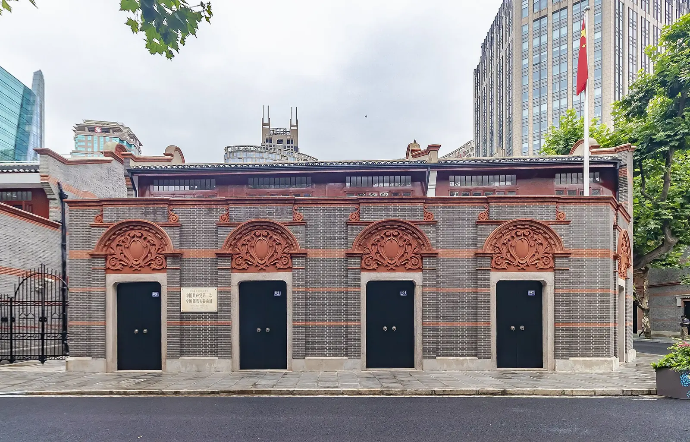
The house in Shanghai's French Concession where the party's First Congress met in July 1921, now a museum. Photograph by ScareCriterion12, 2021. CC BY-SA 4.0, Wikimedia Commons.
Thirteen Chinese delegates met in Shanghai, with two Comintern advisers.
They made the party "secret, exclusive, centralized," and put class struggle first.
Chen Duxiu, absent in Guangzhou, was chosen secretary general.
Their first task: organize labor unions and recruit workers.
Sources: Ebrey, Ch. 25, p. 440; Tony Saich, The Origins of the First United Front in China: The Role of Sneevliet (Alias Maring) (1991). Image: Shanghai, 2021.
Q1 story · Hangzhou and Moscow · 1922–1923
Moscow Ordered the Alliance with the Nationalists Over Many Members' Objections
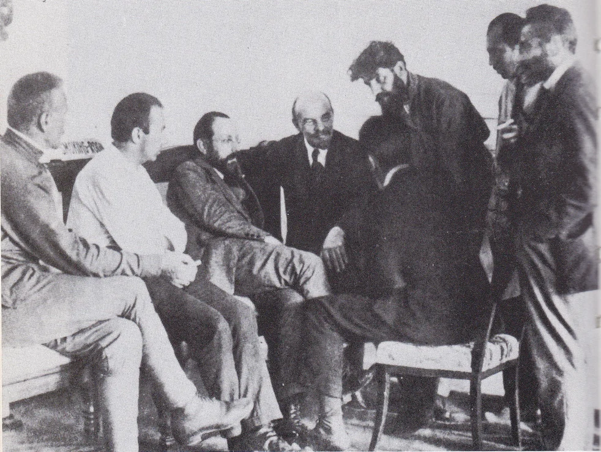
Henk Sneevliet (Maring), third from left, with Lenin at the Comintern's Second Congress, 1920. Public domain, Wikimedia Commons.
In August 1922 Maring pressed party leaders to join Sun's party.
Many objected: Sun's party was full of landlords, officers, and merchants.
Comintern discipline won, and the party accepted the alliance.
Many Nationalist officers were "appalled by talk of class warfare."
Sources: Ebrey, Ch. 25, p. 440; Saich, The Origins of the First United Front (1991). Image: Comintern Second Congress, 1920.
Q1 and Q2 story · Guangdong and Hunan · 1922–1926
Along the March North, Farmers' Associations Grew to More Than a Million Members
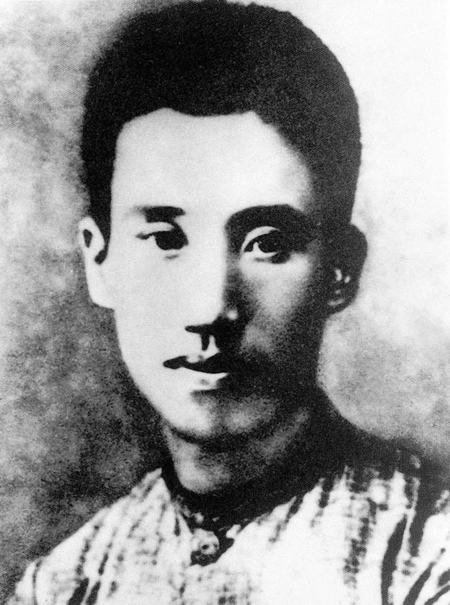
Peng Pai (1896–1929), the pioneer of the peasant associations, 1920s. Public domain, Wikimedia Commons.
The United Front let Communists organize workers and peasants openly.
Peng Pai built the first big farmers' associations in Haifeng, Guangdong.
Organizers went ahead of the army in 1926, village by village.
By the end of 1926 the associations had more than a million members.
Sources: Ebrey, Ch. 25, pp. 440, 442; Fernando Galbiati, P'eng P'ai and the Hai-Lu-Feng Soviet (1985). Image: 1920s.
Q1 story · Shanghai · 21–27 March 1927
On 21 March 1927, Hundreds of Thousands of Workers Struck and Seized Shanghai Before Chiang Arrived
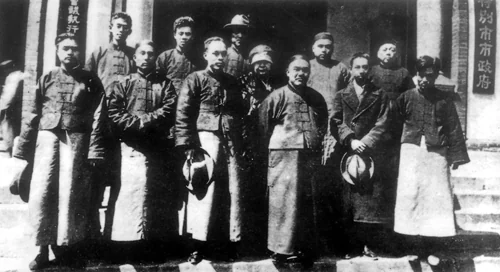
Members of Shanghai's provisional city government, set up after the workers' rising, 27 March 1927; the union leader Wang Shouhua stands at the right of the front row. AI-enhanced from a public-domain original, Wikimedia Commons.
The Communist-led General Labor Union called a general strike as the army neared.
Ebrey counts more than six hundred thousand strikers; armed pickets took the Chinese districts.
Flush with victory, workers demanded the foreign concessions back.
Foreign powers had already landed troops to defend the concessions.
Sources: Ebrey, Ch. 25, p. 440; Perry, Shanghai on Strike (1993). Image: Shanghai, 27 March 1927.
Q1 story · Shanghai · 11 April 1927
On 11 April the Union Leader Was Invited to the Green Gang Boss's House and Murdered
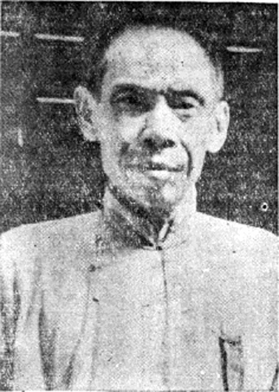
Du Yuesheng, the Green Gang boss, 1940s. Public domain, Wikimedia Commons.
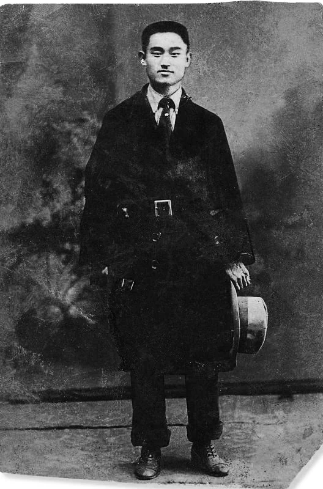
Wang Shouhua, head of the General Labor Union, 1924. Public domain, Wikimedia Commons.
The Green Gang ran Shanghai's opium trade, gambling, and protection rackets.
Its boss, Du Yuesheng, invited the union leader Wang Shouhua to dinner.
Wang was killed that night, and his body was buried outside the city.
Bankers and Chiang's officers had already made their deal with the gang.
Names in This Story
Du YueshengGreen Gang boss, 1888–1951, "Big-Eared Du"; pronounced "doo yweh-shung"
Wang ShouhuaCommunist union leader, 1901–1927
Sources: Ebrey, Ch. 25, p. 440; Brian G. Martin, The Shanghai Green Gang: Politics and Organized Crime, 1919–1937 (1996). Images: 1924; 1940s.
Q1 story · Shanghai, Wuhan, and Beyond · April–July 1927
The Killing Spread; by July the Soviet Advisers Were Gone and the Alliance Was Over
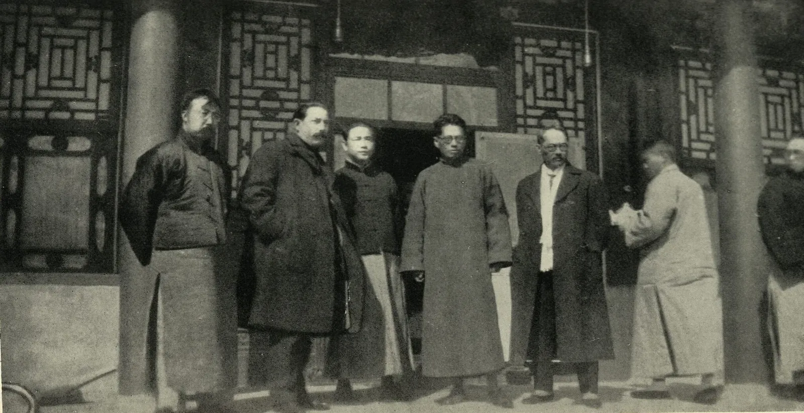
Leaders of the Wuhan government, 1927; from right: Eugene Chen, T. V. Soong, Wang Jingwei, and the Soviet adviser Mikhail Borodin. Public domain, Wikimedia Commons.
The terror spread to Guangzhou, Nanjing, and other cities.
In Beijing a warlord hanged Li Dazhao on 28 April.
Wuhan's left-wing Nationalists turned on the Communists in July.
By July the Soviet advisers had left, and the United Front was over.
Sources: Ebrey, Ch. 25, p. 440; Isaacs, The Tragedy of the Chinese Revolution; Meisner, Li Ta-chao (1967). Image: Wuhan, 1927.
Q1 story · Across China · 1927–1930
Party Membership Fell from 60,000 to Under 10,000, and Bobbed Hair Could Get a Young Woman Shot
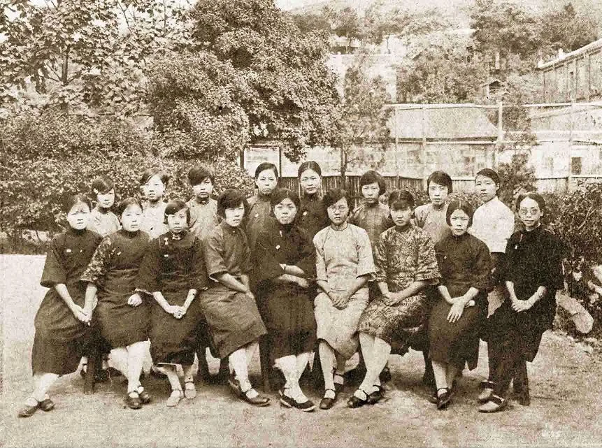
Women students at National Wuhan University, 1928; most wear their hair bobbed. Public domain, Wikimedia Commons.
Uprisings that autumn in cities and villages failed.
From 1927 to 1930, troops hunted Communist organizers everywhere.
In some places short hair alone was "evidence" that a young woman was a Communist.
Membership fell from about 60,000 to under 10,000 within a year.
Sources: Ebrey, Ch. 25, pp. 440–441; Christina K. Gilmartin, Engendering the Chinese Revolution (1995). Image: Wuhan, 1928.
Reading Guide · Review Question 1
Reading Guide · Review Question 1
Review Question 1
How did the Soviet Comintern influence the early development of the Chinese Communist Party, and why did the First United Front collapse in 1927?
Mao Zedong Was Born in 1893 in a Hunan Village and Worked on His Father's Farm
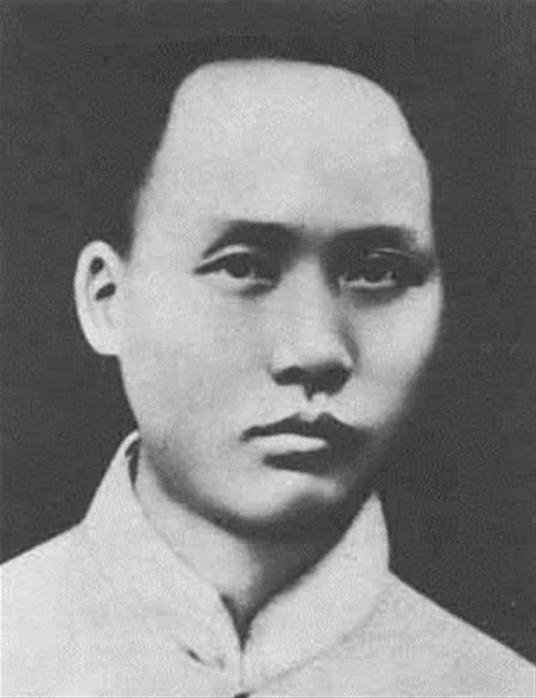
Mao Zedong at twenty-five, in Changsha, April 1919. Public domain, Wikimedia Commons.
Mao grew up in Shaoshan, a village south of Changsha, Hunan's capital.
From age six he worked on his father's 3-acre farm.
He studied six years at the village school, then farmed full time.
Through the 1920s he was "just one of hundreds" of party organizers.
Names in This Story
Mao Zedong1893–1976; older spelling Mao Tse-tung; pronounced "mow dzuh-dong"
Course assignment · Mao Stream & Discuss
Your Mao Stream & Discuss assignment is due Thursday, 10 December. Keep notes on Mao from this lecture on; you will need them.
Sources: Ebrey, Ch. 25, p. 441. Image: Changsha, 1919.
Q2 story · Changsha · 1911–1918
In Changsha He Cut Off His Queue, Joined the 1911 Army, and Read Rousseau and Darwin in the Library
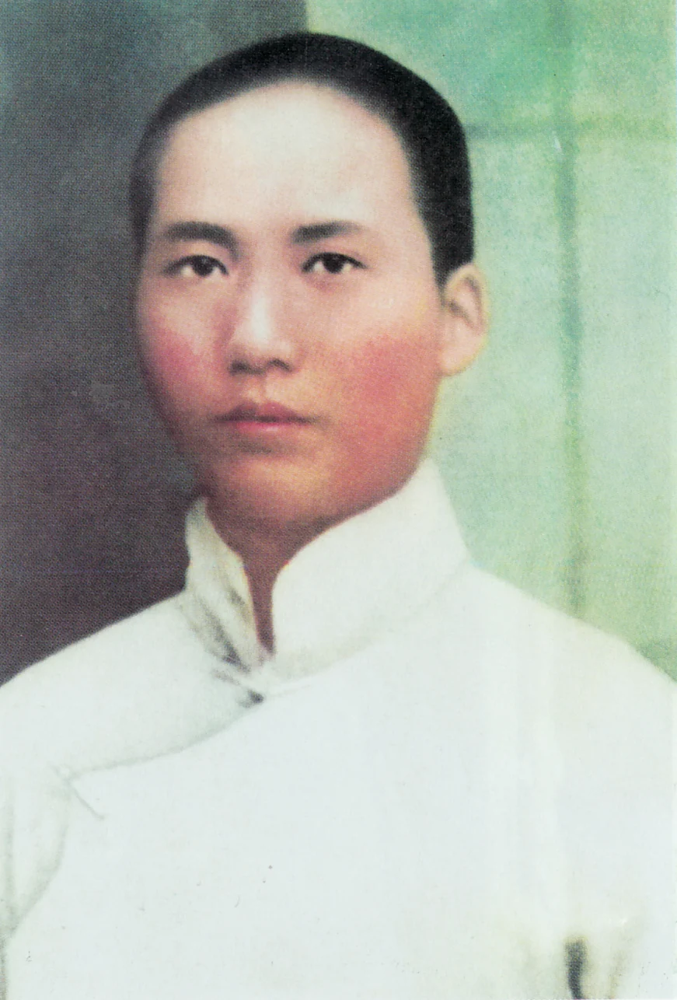
Mao as a student in Changsha, 1910s. Public domain, Wikimedia Commons.
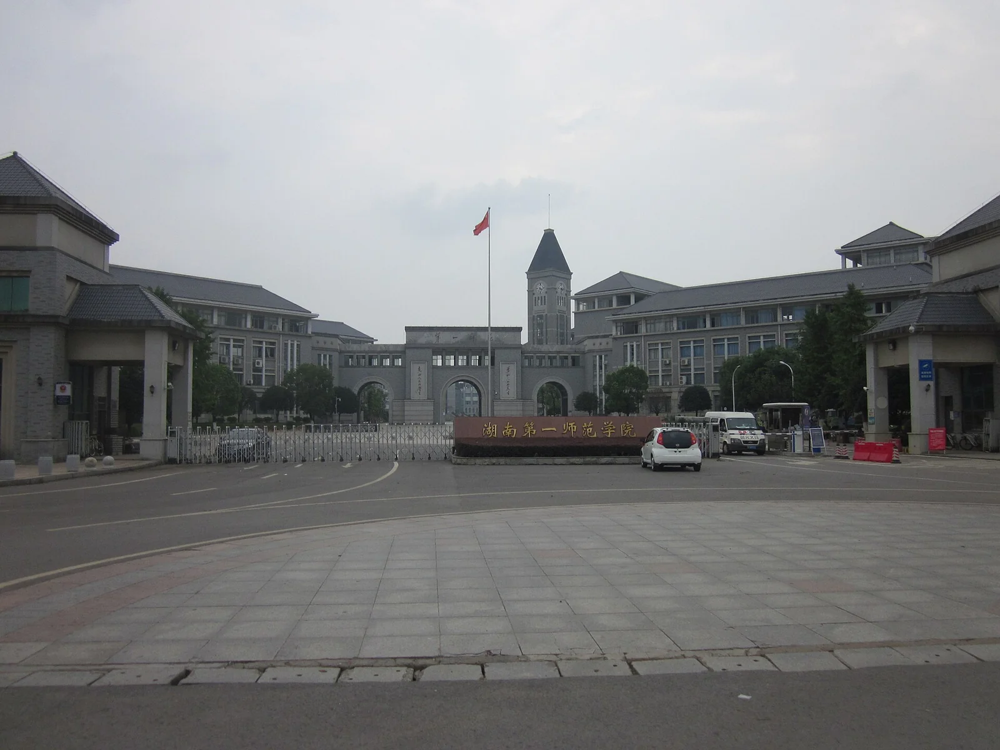
Hunan First Normal School, Changsha, where Mao studied until 1918. Photograph 2014. CC0, Wikimedia Commons.
In 1911 he went to middle school in Changsha and cut off his queue.
After the Wuchang rising he served six months in the republican army · Ch. 24 L1 · 1911 ↗
For a year he read world history and Western thinkers in the public library.
In 1913 he entered a teachers' school, which became the First Normal School.
Sources: Ebrey, Ch. 25, p. 441; Stuart Schram, Mao's Road to Power, vol. 1 (1992). Images: 1910s; Changsha, 2014.
Q2 story · Beijing and Changsha · 1918–1921
In Beijing He Worked as a Library Clerk Under Li Dazhao, Then Went Home to Organize
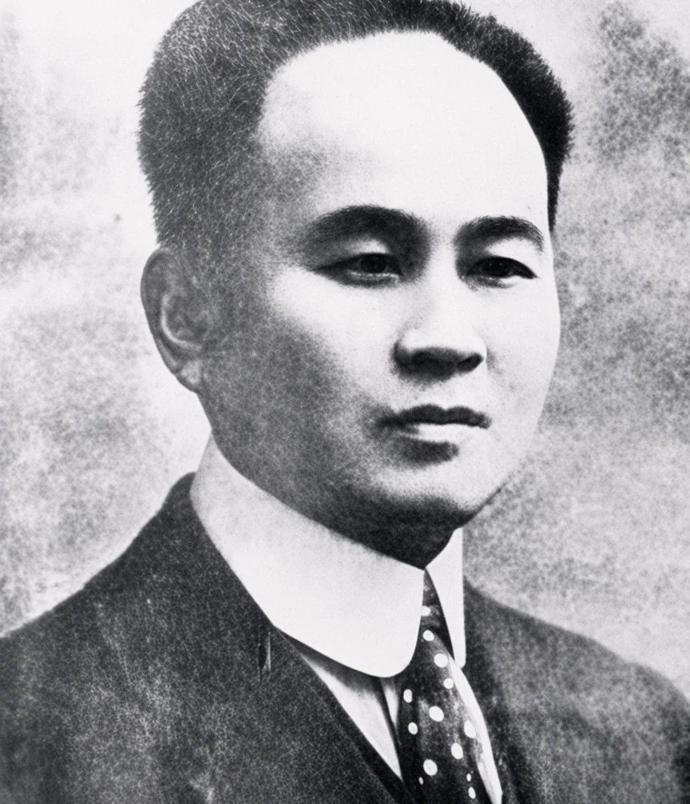
Yang Changji (1871–1920), Mao's teacher. AI-enhanced from a public-domain original, Wikimedia Commons.
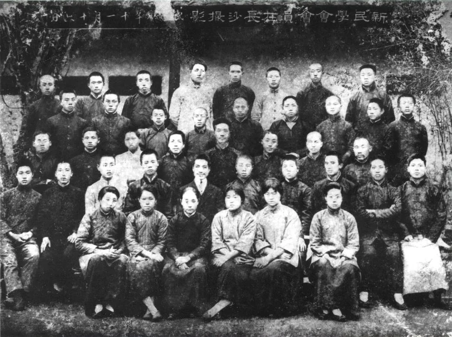
Members of the New Citizens' Society, the study club Mao helped found, Changsha, 16 November 1919; Mao is fourth from left in the back row. Public domain, Wikimedia Commons.
His teacher Yang Changji got him a job as a clerk in the Beijing University library.
His boss was Li Dazhao; Mao missed May Fourth while back in Hunan.
In Changsha he ran a magazine and organized a student strike.
He lived with Yang's daughter Yang Kaihui and was a Hunan delegate in 1921.
Names in This Story
Yang ChangjiMao's teacher, 1871–1920
Yang KaihuiYang's daughter and Mao's wife, 1901–1930; pronounced "yahng ky-hway"
Sources: Ebrey, Ch. 25, p. 441. Images: Changsha, 1919.
Q2 story · Hunan, Guangzhou, and Wuhan · 1923–1927
In February 1927 Mao Reported That Hunan's Peasants Had Risen Against the Landlords
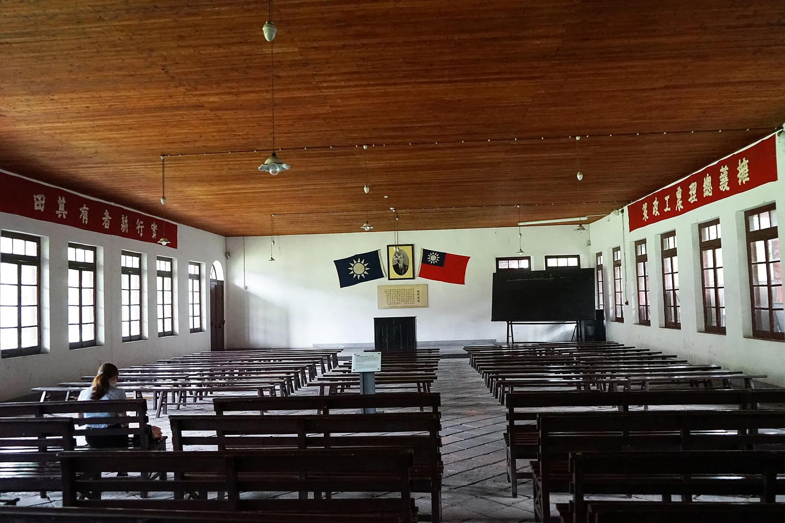
A classroom of the Peasant Movement Institute at Wuchang, where Mao taught in 1927. Photograph by Antolavoasio, 2017. CC BY-SA 4.0, Wikimedia Commons.
In 1925 Mao went back to his home village to work with peasants.
In 1926 he ran the Nationalists' Peasant Training Institute in Guangzhou.
In February 1927 he reported that peasants had "seized power from landlords."
"A revolution is not a dinner party." (Mao, 1927)
Sources: Ebrey, Ch. 25, pp. 441–442; Mao Zedong, "Report on an Investigation of the Peasant Movement in Hunan" (1927), in Schram, Mao's Road to Power, vol. 2 (1994). Image: Wuchang, 2017.
Q2 story · Hunan and Wuhan · April–September 1927
After the Terror, Mao Concluded That "Political Power Grows Out of the Barrel of a Gun"
In April 1927 the terror crushed Hunan's peasant movement.
In August Mao told party leaders that power "grows out of the barrel of a gun."
In September he led the Autumn Harvest Uprising in Hunan, and it failed.
His conclusion: ideas need an army behind them.
Sources: Ebrey, Ch. 25, p. 442; Schram, Mao's Road to Power, vol. 3 (1995). Image: Wuhan, 1927.
Q2 story · Jinggangshan, Hunan–Jiangxi border · 1927–1929
With His Last Followers He Took to the Jinggang Mountains in October 1927
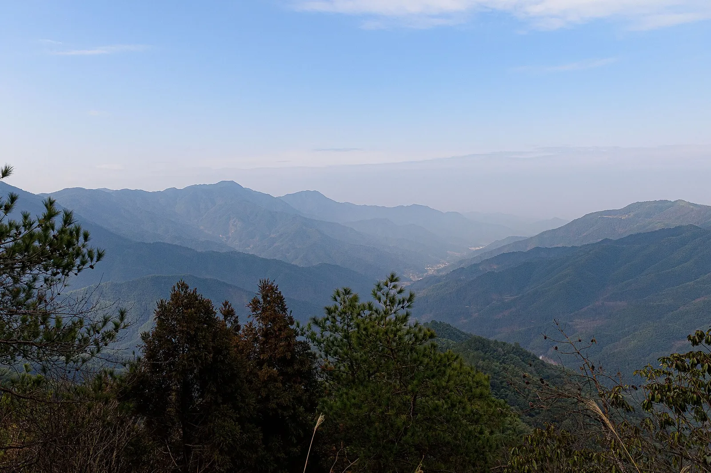
The Jinggang Mountains on the Hunan–Jiangxi border. Photograph by N509FZ, 2025. CC BY-SA 4.0, Wikimedia Commons.
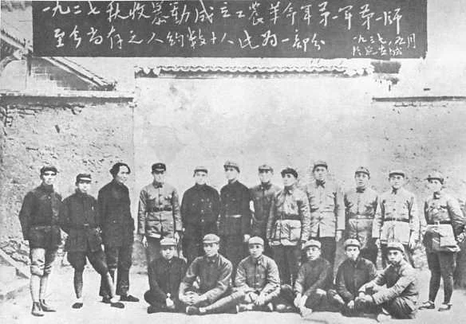
Survivors of the Autumn Harvest Uprising at Yan'an, September 1937; Mao stands third from left at the back, He Zizhen at the far right. Public domain, Wikimedia Commons.
His base was a mountain lair once used by secret-society bandits.
He redistributed all the land of the rich.
His troops lacked arms, clothes, and medicine.
Zhu De's army joined him in 1928; He Zizhen became his partner.
Names in This Story
Zhu DeRed Army commander, 1886–1976; pronounced "joo duh"
He ZizhenMao's third wife, 1909–1984; pronounced "huh dzih-jun"
Sources: Ebrey, Ch. 25, p. 442. Images: 2025; Yan'an, 1937.
Q2 story · Jiangxi–Fujian border · 1929–1931
In 1929 He Moved to the Jiangxi–Fujian Border and Built the Jiangxi Soviet
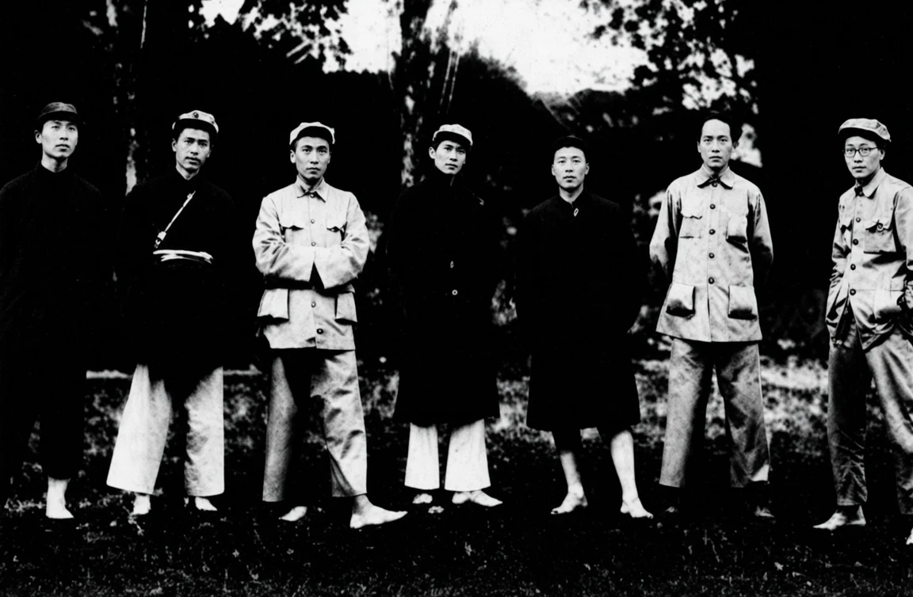
Party leaders at Ruijin, Jiangxi, November 1931: from right, Wang Jiaxiang, Mao Zedong, Xiang Ying, Deng Fa, Zhu De, Ren Bishi, and Gu Zuolin. AI-enhanced from a public-domain original, Wikimedia Commons.
In January 1929 Mao left for a better-supplied border region.
There he built what came to be called the Jiangxi Soviet.
Party leaders in Shanghai condemned his rural revolution and his use of force.
Mao fell ill and never obeyed their order to come to Shanghai.
Names in This Story
sovieta government by elected councils, from the Russian word for "council"
Jiangxipronounced "jyahng-shee"
Sources: Ebrey, Ch. 25, p. 442; Stephen C. Averill, Revolution in the Highlands: China's Jinggangshan Base Area (2006). Image: Ruijin, 1931.
Q2 concept · Rural classes
Concept: Mao Sorted Villagers into Landlords and Rich, Middle, and Poor Peasants
Concept
Rural class categories
Mao's labels for villagers by how they got their living: landlords lived off rents; rich peasants farmed but also rented out land or lent money; middle peasants worked their own land without borrowing or hiring; poor peasants rented land or owned too little to live on; below them came hired hands, porters, and boatmen.
The labels decided who would lose land and who would gain it.
Mao found that most villagers were poor peasants or lower.
So land reform would give land to many more people than it took from.
Sources: Ebrey, Ch. 25, p. 442.
Q2 story · Xunwu County, Jiangxi · 1929–1930
In Xunwu County Mao Counted Land, Shops, and Schools, and Found Most People Were Poor
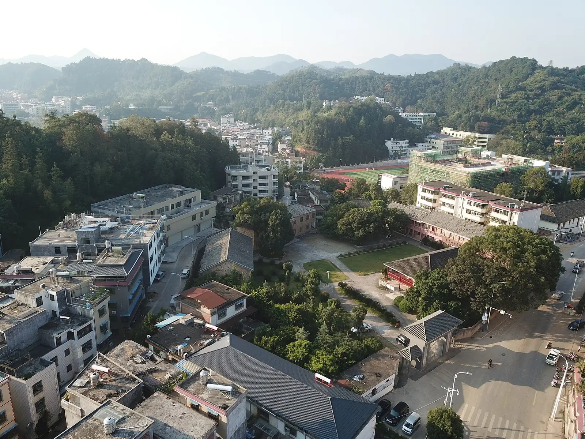
The building in Xunwu where Mao carried out his county survey, now a memorial site. Photograph by Zhangzhugang, 2018. CC BY-SA 4.0, Wikimedia Commons.
Mao interviewed merchants, clerks, and farmers in one county for weeks.
He recorded who owned land, who rented, and who lent money.
He counted literacy, the post, shops, and even prostitutes.
His aim: learn how a party could be built on a peasant base.
Sources: Ebrey, Ch. 25, p. 442; Mao Zedong, Report from Xunwu, trans. Roger R. Thompson (1990). Image: Xunwu, 2018.
Q2 story · Changsha · July–November 1930
In 1930 the Red Army's Attacks on Changsha Failed, and the Nationalists Shot Mao's Wife
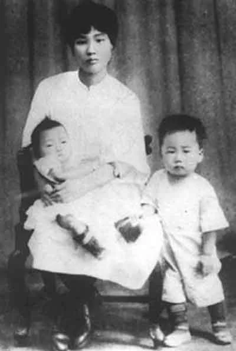
Yang Kaihui with her sons Mao Anying and Mao Anqing, 1920s. Public domain, Wikimedia Commons.
Party leaders still wanted cities, and ordered the Red Army to take Changsha.
The Red Army held the city briefly in July 1930; a second attack in September failed.
In October the Nationalists arrested Yang Kaihui; on 14 November they shot her.
Friends took the three boys to Shanghai; Mao did not see the two survivors until 1946.
Sources: Ebrey, Ch. 25, p. 442; Schram, Mao's Road to Power, vol. 3 (1995); Philip Short, Mao: A Life (1999). Image: 1920s.
Reading Guide · Review Question 2
Reading Guide · Review Question 2
Review Question 2
How did Mao Zedong's experiences in Hunan and the Jiangxi Soviet lead him to emphasize peasants as the foundation of the Chinese revolution?
Next: In 1928 Chiang Reunified China and Ruled from a New Capital at Nanjing
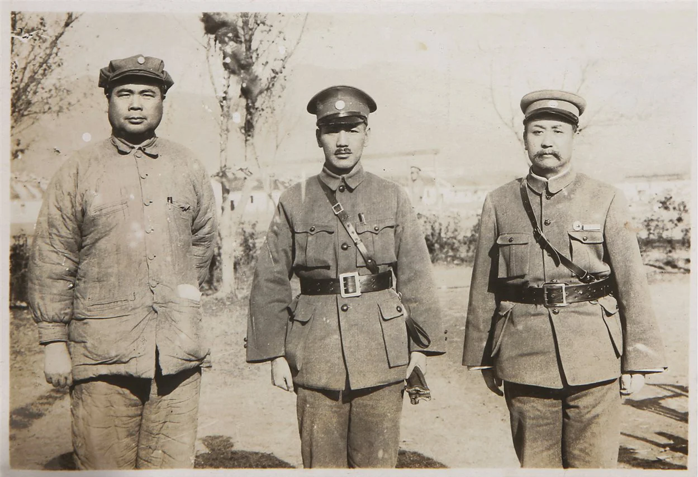
Chiang Kaishek (center) with the warlords Feng Yuxiang (left) and Yan Xishan (right), 1928. Public domain, Wikimedia Commons.
The purge did not slow Chiang: in 1928 three great warlords joined him.
Nanjing became the capital of a reunified Republic.
Lecture 2 follows Chiang's government and the city of Shanghai · Ch. 25 L2 ↗
Sources: Ebrey, Ch. 25, p. 442. Image: 1928.
Pierian Spring · Required Independent Study
Today's lecture ends here. Continue on your own: two short stories about what happened to the Communist Party's cities and to its founder after the spring of 1927.
"A little learning is a dang'rous thing; Drink deep, or taste not the Pierian spring."Alexander Pope, An Essay on Criticism, 1711
Pierian Spring · Story · Guangzhou · 11–13 December 1927
In December 1927 a Communist Rising Held Guangzhou for Three Days
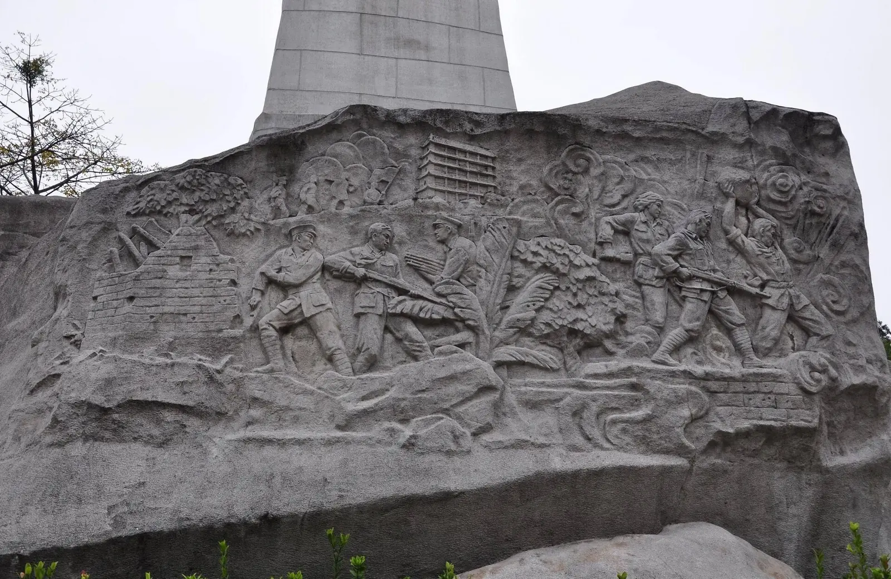
Relief on the memorial to the Guangzhou Uprising in the Martyrs' Memorial Park, Guangzhou. Photograph by Anna Šlajová, 2019. CC BY-SA 4.0, Wikimedia Commons.
Under Comintern orders, the party planned a city rising in Guangzhou.
On 11 December worker guards and cadets seized much of the city and proclaimed a soviet.
Nationalist troops retook it within three days.
Ebrey counts three thousand to four thousand worker revolutionaries executed.
Sources: Ebrey, Ch. 25, p. 440; Isaacs, The Tragedy of the Chinese Revolution (rev. 1961); C. Martin Wilbur, The Nationalist Revolution in China, 1923–1928 (1984). Image: Guangzhou, 2019.
Pierian Spring · Story · Wuhan, Shanghai, and Nanjing · 1927–1932
Moscow Blamed Chen Duxiu, and the Party Expelled Its Founder
Chen Duxiu (right) and Peng Shuzhi outside a Nationalist court in Nanjing after their arrest, 1932. Public domain, Wikimedia Commons.
In August 1927 the party removed Chen as its leader.
Moscow blamed him for policies Moscow itself had ordered.
In 1929 the party expelled him for siding with Trotsky.
In 1932 the Nationalists arrested him; he spent five years in prison.
Names in This Story
Chen Duxiufounder of New Youth and first leader of the party, 1879–1942; pronounced "chun doo-shyoh"
Sources: Ebrey, Ch. 25, p. 440; Lee Feigon, Chen Duxiu: Founder of the Chinese Communist Party (1983). Images: 1927; Nanjing, 1932.
Sources and image credits
The Stories in This Deck Rest on These Sources
Main source
Patricia Buckley Ebrey, A History of China, Chapter 25, "War and Revolution, China (1927–1949)," pp. 439–442, with recaps of Chapter 24, pp. 428–429. All page references in this deck are to these pages.
Further reading beyond Ebrey
Elizabeth J. Perry, Shanghai on Strike: The Politics of Chinese Labor (1993) (slides b, j). Harold R. Isaacs, The Tragedy of the Chinese Revolution (rev. 1961) (slides b, l, bb). Brian G. Martin, The Shanghai Green Gang (1996) (slide k).
Maurice Meisner, Li Ta-chao and the Origins of Chinese Marxism (1967) (slides d, l). Marilyn A. Levine, The Found Generation (1993) (slide e). Tony Saich, The Origins of the First United Front in China (1991) (slides g, h).
Fernando Galbiati, P'eng P'ai and the Hai-Lu-Feng Soviet (1985) (slide i). Christina K. Gilmartin, Engendering the Chinese Revolution (1995) (slide m).
Stuart R. Schram, ed., Mao's Road to Power: Revolutionary Writings 1912–1949, vols. 1–3 (1992–1995) (slides p, r, s, x). Mao Zedong, Report from Xunwu, trans. Roger R. Thompson (1990) (slide w). Stephen C. Averill, Revolution in the Highlands (2006) (slide u). Philip Short, Mao: A Life (1999) (slide x).
C. Martin Wilbur, The Nationalist Revolution in China, 1923–1928 (1984) (slide bb). Lee Feigon, Chen Duxiu (1983) (slide cc).
Modern photographs, CC BY-SA 4.0: g (ScareCriterion12, 2021); r (Antolavoasio, 2017); t (N509FZ, 2025); w (Zhangzhugang, 2018); bb (Anna Šlajová, 2019).
AI-enhanced: the photographs on slides b, j, q (Yang Changji), and u were sharpened and upscaled with AI image generation from the public-domain Wikimedia Commons originals credited above; small details, especially faces, may differ from the originals.